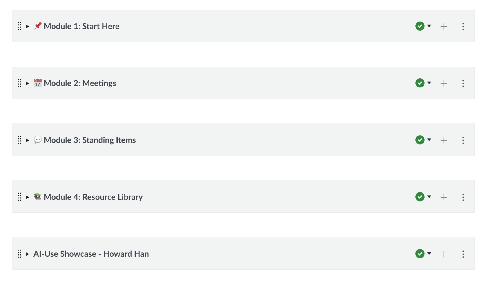
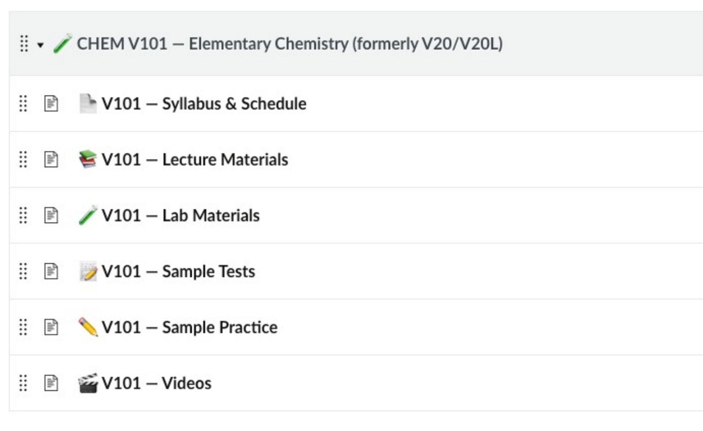
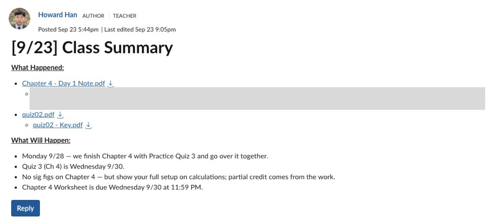
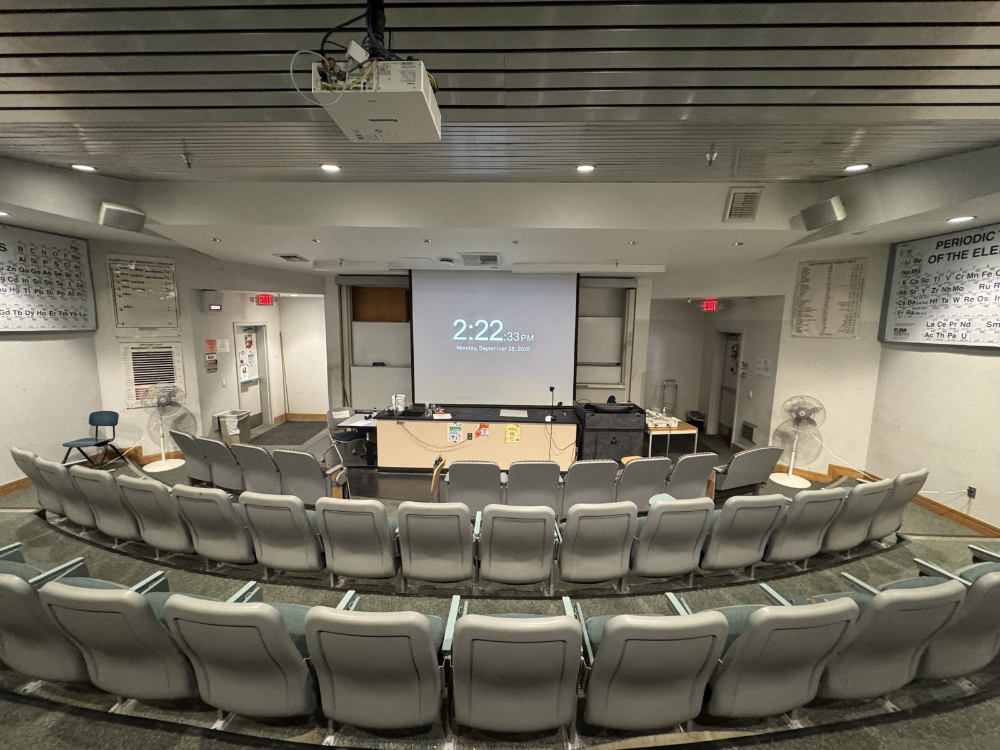
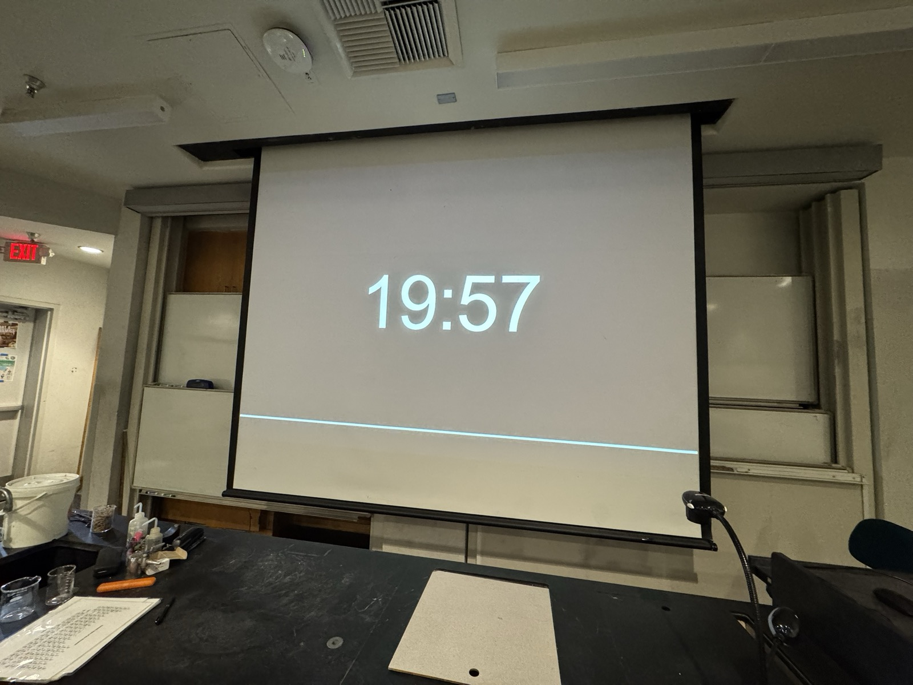

AI Integration
Over the past few years, AI has become one of the most talked-about topics at the college. Like everyone else, I was starting from scratch. In the beginning, "using AI" just meant typing questions into a chatbot. As new models appeared and the information around them grew, I kept trying new things. This page is a record of what I've tried along the way.
Understanding different levels of AI use
Google DeepMind's AlphaFold predicts the three-dimensional structures of proteins, work that earned a share of the 2024 Nobel Prize in Chemistry. Meanwhile, my own use of AI during my first years here amounted to typing questions into a chat window. The gap between the two bothered me. But I wasn't going to become an AI engineer overnight, and I wanted to understand what the steps in between looked like.
In April 2026, Michal Klacko of STRV published a framework that divides AI use into six levels: Skeptic, Tourist, Assisted Coder, Prompt-Driven Developer, AI-Native Engineer, and AI Architect. It was written with software developers in mind, and since I'm not one, the categories didn't mean much to me at first. As I got to know these tools better, though, I found I could draw my own lines based on what the work involves:
- Level 1 — Chatting. Asking questions in a chat window on an AI website.
- Level 2 — Organizing work into projects. Instead of separate chats that each start from scratch, the conversations and files for a larger task live together, so every new chat already has the task's context.
- Level 3 — Working on my own computer. AI runs as a desktop application with access to local files and programs, so it reads and edits the actual documents rather than me copying text in and out of a browser.
- Level 4 — Building a personal knowledge system. Material is stored and organized systematically, in a form that both I and AI agents can find and use.
- Level 5 — Connecting and automating. AI connects directly to websites and services, and I build tools that run on their own.
My first three years stayed within the first two levels. Asking a chatbot questions is convenient, but a chat window has no systematic way to handle work, and my tasks were growing bigger and running longer. Moving into the third level and beyond, at the end of my third year, was a natural next step.
Moving the work out of the chat window
In early June 2026 I watched a YouTube video demonstrating Codex, an AI agent shown printing shipping labels through a Telegram bot, and watching an inbox, summarizing new emails, and drafting replies. I asked Claude whether Claude Code could do the same. A search showed that the video overstated what Codex does, and the conversation turned into a different question: how would an ordinary user like me use this kind of AI? I felt uncomfortable pushing myself onto a new tool when I had no clear need for it and no clear understanding of it. Until then, I thought Claude Code was something developers used to write code, or to run several AI agents at once in separate windows. When I had asked about it in April, Claude had said much the same: it was meant for full-time developers. Still, I knew I would not learn it without trying it.
There was no one I could ask about this in person, so on June 6 I sat down with Claude to work it out myself, starting with the characteristics of my work and what I needed. The repetitive part of my work that bothered me most turned out to be keeping track of commitments, such as when I had told a student I would get back to them, or what I had said would be on the next quiz. Those commitments were scattered across my journal, notes I sent to myself in a messaging app, Outlook, and things I said out loud in lectures, which were recorded on Zoom and transcribed. I rarely forgot them outright, but I often had the feeling that I was about to. We narrowed the plan to the two things my existing tools could not do: pull commitments out of lecture transcripts, and search my own saved notes by meaning. Reminders I could leave to my calendar. For storage I chose plain files in a Google Drive folder with an index, instead of Notion, so the records would not depend on an outside service or sit in my school account.
To connect the pieces, Claude first suggested a workflow tool I had never heard of. When I asked whether that was what Claude Code was for, the plan shifted to Claude Code. I told Claude I did not really understand what Claude Code was, and installed it that day to try it.
The first thing I asked it to do was read one of my lecture transcripts and list the promises I had made to students in class, such as "this will be on the next exam" or "I'll get to this next week." In 26 seconds it found fifteen, sorted them into categories, and pointed out which ones to deal with first. Then I asked it to save the list as a file, and it did. The same job in a chat window would have taken six steps on my part: open the file, copy the text, paste it into the chat, copy the answer, create a new file, and save it. In Claude Code it took two short requests, one for each. The AI behind both is the same, but the chat window can only answer, while Claude Code can also act on the files on my computer, asking my permission before each step. From that point on, I moved the work out of the chat window.
That same day, the plan became the first version of the database described in the next section: a bot on the Mac mini that stays on, waits for messages from my phone, and files them. By the end of June, the research paper I was developing for the Math Readiness Initiative, with its analysis scripts and manuscript files, had moved to Claude Code as well.
A database of my teaching materials
Claude Code opens inside a folder on my computer. Each folder holds one kind of work along with everything that has been written down about it, and the agent reads those files before it does anything. Dividing the information this way lets each agent concentrate on its own role, working only from what it has been given. My college folder and my personal folder may both hold a schedule, for example, but the two schedules are about different things, and neither agent should confuse one with the other. I keep more than ten of these folders: some for the college, some personal, and some that exist for a single job, such as one piece of software.
Course materials, lecture transcripts and lab notes
One of these folders holds my teaching materials, built as a database. An agent read through my slides and wrote their content out as text files, organized by chapter and topic. It also linked the transcripts Zoom makes of my lecture recordings to the matching slides, so for any topic I can see both what the slides say and how I taught it in class. The folder holds my lab materials and the documents I have written for the college as well. During CHEM V120B last summer I sent field notes to it from the lab bench through the phone bot described above. Each recorded what went wrong with a procedure and what to change next time, written within minutes of seeing it. The lab technician's preparation emails and photos are there too, filed by course and by experiment in date order, so before a lab I can see how that experiment has been set up in past years. This semester the full-term section runs ahead of the late-start one, so after a full-term lecture an agent reads the Zoom transcript against my plan and drafts what to change when I teach that chapter to the late-start section.
As the material grows, reading through all of it for every question stops working. An agent also analyzes new material as it comes in, so comparisons across semesters are ready when I need them, as with the list below.
Recurring student difficulties
I have taught CHEM V101 three times with recordings. The notes built from the Zoom transcripts of those three semesters list, chapter by chapter, the places where students got stuck, each tagged with how many of the three semesters it came up in. A place that came up once may come from something that happened that day. A place that came up in all three comes from the material itself, and students will likely get stuck there again. I read this list the evening before I teach a chapter, and it decided which of the simulations described below were built first.
Connecting AI to Canvas
The last of the levels above is where AI works directly with websites and services, instead of handing me text to carry over, and where I build tools that run on their own. In my work the service that matters most is Canvas, where every course at the college runs.
The Canvas API
Canvas is normally edited by clicking through its pages in a browser. It also has an API, a way for a program to reach a course directly without going through the screens. That lets my AI agent make changes for me. A change can be written down once as a script, a short set of instructions, and then run with one command however many pages it touches. I work this way in my own CHEM V101 courses, the chemistry department's shared course, and the Distance Education Advisory Group's course. Every change follows the same order: read what is there, run the change without saving it, show me the result, and only then write.
A Canvas course for the Distance Education Advisory Group
The Distance Education Advisory Group's working material was scattered. Older agendas and minutes sat on the college website, newer ones in a public board system that shows one meeting at a time, and the documents people shared during meetings lived in Teams chat threads. Answering "did we already discuss this?" meant knowing where to look and opening meetings one by one.
I proposed a Canvas course for the group as its central repository. It came up at three meetings between March and May 2026, and in May the group supported it. Matthew Moore, one of the group's tri-chairs, created the shell that afternoon.
I built the structure that evening, before any content went in. A Start Here module holds the group's charge, its roster and roles, its goals, its governance structure and the district's DE handbook. A Meetings module is organized by academic year. A Standing Items module mirrors the standing items on the group's own agenda: the DE strategic plan, AI and academic integrity, the testing center, accessibility. A Resource Library holds the rest. The meeting record went in once the frame was there, thirty-five meetings from September 2021 to May 2026 and sixty-eight documents. I gathered the older PDFs from the college website, and Claude Code sorted them by year and uploaded them. For the board system a script finds every published meeting, renders the agenda and minutes to PDF, and names them by date. Over the summer other members began adding to the course and editing its pages.

The day the course was created I asked Matthew Moore to add Nectir, an AI assistant the college already had, and he installed it the next day. In June Meg Phelps, Instructional Technologist and Designer in Ventura College Distance Education, switched on its connection to Canvas at my request, and I configured it to answer from the group's own minutes and pages.
At the first meeting of the fall, on September 10, the course was an agenda item. The group agreed without objection to enroll every member, and at a member's request I shared my screen and walked everyone through it. The next day Ali Olson-Pacheco, a member of the group, used Nectir to ask what work had already been done on revising the group's charge. It walked her through a year of minutes, and she found the working draft on the course's first page. I checked its answer against the minutes and corrected one line, because a pending clarification it had attached to the charge belonged to a different agenda item. Matthew Moore replied that the research would keep the group from reinventing the wheel.
One academic year, 2024–25, is still missing from the course, the older files still carry their original names, and the sixteen PDFs the script rendered lack the accessibility tags the older, hand-made ones have. All three are on my list.
The chemistry department's shared course
The chemistry department keeps a shared Canvas course that works as a library for every chemistry instructor: syllabi, lab manuals, lecture materials, exams and videos for five courses. Over the years the files had piled up with no naming convention, the modules were organized in different ways, and old and current versions sat side by side, so an instructor opening it could not easily tell which version was current. I took on reorganizing it in July 2026.

Because the course belongs to the whole department, every bulk change went through the same steps. The agent first produced a table of what it would change, without changing anything, and I approved it. It then ran the change on one or two items and read them back from Canvas before the rest went ahead. Nothing was deleted: old versions were marked and hidden, and every change was logged so it can be undone. Each course now has the same six sections (Syllabus & Schedule, Lecture Materials, Lab Materials, Sample Tests, Sample Practice, Videos). Across the course, 398 files were renamed to one convention, the current V101 lab manual was uploaded (until then the course had held only the 2019 edition), and forty-three videos that had been stuck in unpublished modules were linked from new Videos pages. A "What Changed & When" page, generated from the log, lets colleagues find where their files went. In August, after I approved each batch, an agent added the markup a screen reader depends on to 140 table headers across forty pages, most of them pages the reorganization itself had created.
The course also holds the department's meeting log, a summary page for each department meeting that I have kept since April 2025. There are eleven as of September 2026.
One course in two Canvas shells
Since Fall 2025, lecture and lab have been combined under one CRN, and Canvas creates a separate shell for each CRN, so a single course can end up split across several shells. The department has used two remedies: a blueprint, which copies one master shell into the others, and a hard link, which merges sections into one shell. I teach all of my late-start CHEM V101 sections, so I merged them into one shell. My two full-term sections could not be merged, because another instructor teaches one of the lab sections, so that course runs in two shells. After each class a summary has to go into both, in two parts: What Happened (the day's notes, the recording link, any quiz and its key) and What Will Happen (the next class, upcoming quizzes and deadlines). The day's files also have to be placed in the right module in each shell. I used to do all of that by hand, twice. Now one script does it for both shells.

Simulations for CHEM V101
The simulations have a page of their own. I wanted demonstrations that fit lecture, and more in Canvas for students to do than read pages and upload files. Building them used to be out of reach, because I would have had to learn to program first. The database above is what made them possible. I did not have to explain my course, because the agent already had the analogy I use for electronegativity, the numbers I put on the board and the order I teach topics in, so what students open in Canvas matches what they heard in lecture. Through the API, each simulation goes onto the module page next to the material it belongs to, and a fix is re-uploaded to every course that uses it in one run. There are thirty-five as of September 2026.
Each one still goes past me before students see it. One showed a rearranged equation with a ÷ sign, and I had it rebuilt as a fraction, because the point of that lesson is that x is in the denominator and a ÷ sign hides it.
Comments matched to wrong answers on lab quizzes
In September 2026 I began sending automatic comments on CHEM V101 lab quizzes, and have kept doing so since. Each wrong choice on a multiple-choice question has an explanation written in advance. After a quiz is graded, a script built with the agent puts together the explanations for the letters a student chose and posts them, with the graded scan, as a comment on that student's submission. It works when a quiz is entirely multiple choice; free-response work is still graded by hand.
A classroom clock and timer
Once the simulations were working, I wondered whether I could make a clock as well. I put a timer on the projector whenever the class is working against time, such as a quiz or fifteen minutes on a practice set. The free clock site I had been using had filled with advertising, which is a distraction in front of a class during a quiz. So I made my own (tools.rubyeye19.com/clock). It is a single HTML file with no external dependencies, a clock and a countdown timer readable from the back of the room. Because nothing loads from outside, it keeps working if the network drops mid-class.


Next steps
Until now I have brought AI into my work in the same order each time, starting from something that was missing and then finding a tool to fill it, as with keeping track of what I had promised students or posting the same class summary to two Canvas shells. That order made sense while I understood my own work far better than I understood the tools, and adopting a tool I neither needed nor understood would have been a risk.
My understanding of the tools has since caught up with my understanding of the work, so I can start from an idea as well as from a problem. The simulations are one example. They started from something I wanted, which was to give students a wider range of things to try and practice, and having them inside Canvas would make my hybrid section more fully a hybrid course. Building them would have been far out of reach if AI were not writing the code, and once it was, it became a matter of deciding to try.
The next step is to keep trying ideas I would once have set aside, and to check each one before it reaches a student, as I did with the simulations.